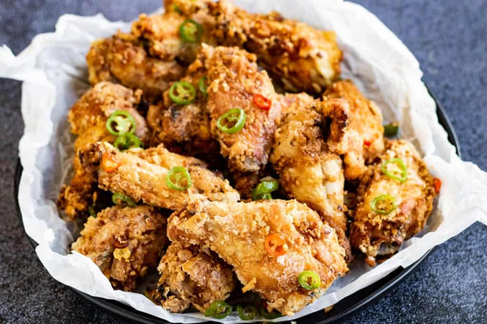

Salt & Pepper Wings

Description
Chinese-style chicken wings that has
a little bit of a KICK!!!!Chicken Wings
combined with spicy peppers and szechuan salt
seasoning to get a simple but mild spicy flavor profile.
Ingredients
- Shaoxing Wine
- Ginger
- Garlic
- Chicken Wings
- Potato Starch
- Avocado Oil
- fresno & jalapeno peppers
- Ground White pepper
- Szechuan Pepper Salt
Steps
-
Marinate the chicken
(15 to 20 minutes) in a mixture of rice wine,
garlic, and ginger to give it lots of flavor.
-
Coat the wings in starch
-
Cook the wings in the pre-heated cooking oil (350 F)
for about 8-10 minutes. Set them aside once cook.
-
Cut the chili peppers and garlic. Stir
fry them quickly in avocado oil
-
Toss the cooked wings into the stir-fried Ingredients
and season with the pepper salt and white peppers